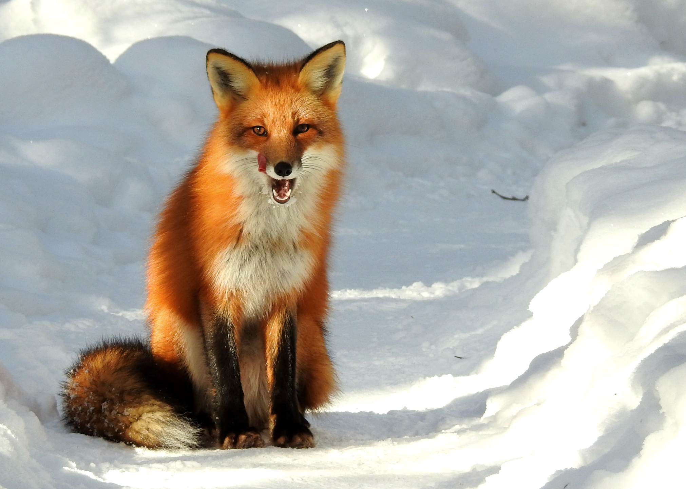
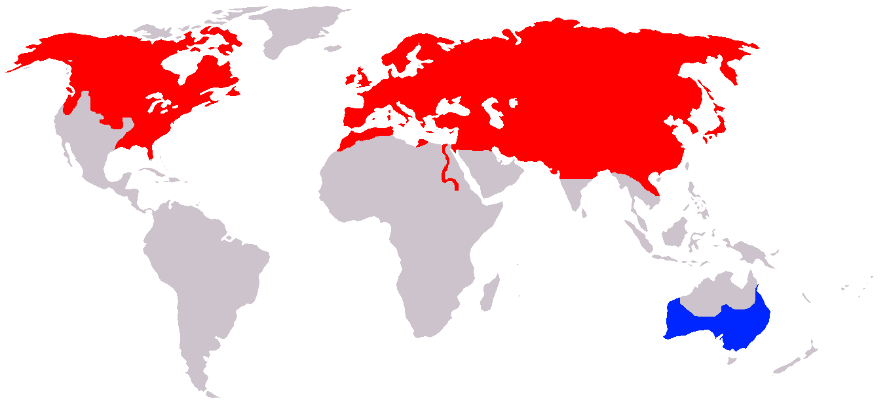
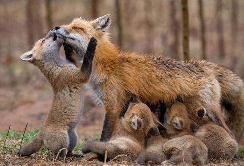

Description of the Red Fox
Appearance
 The red fox is the largest of the true foxes with an elongated body and relatively short limbs. The tail, which is longer than half the body length (70 per cent of head and body length), is fluffy and reaches the ground when in a standing position. Their pupils are oval and vertically oriented. Nictitating membranes are present, but move only when the eyes are closed. The forepaws have five digits, while the hind feet have only four and lack dewclaws. They are very agile, being capable of jumping over 2-metre-high (6 ft 7 in) fences, and swim well. Vixens normally have four pairs of teats, though vixens with seven, nine, or ten teats are not uncommon. The testes of males are smaller than those of Arctic foxes.
The red fox is the largest of the true foxes with an elongated body and relatively short limbs. The tail, which is longer than half the body length (70 per cent of head and body length), is fluffy and reaches the ground when in a standing position. Their pupils are oval and vertically oriented. Nictitating membranes are present, but move only when the eyes are closed. The forepaws have five digits, while the hind feet have only four and lack dewclaws. They are very agile, being capable of jumping over 2-metre-high (6 ft 7 in) fences, and swim well. Vixens normally have four pairs of teats, though vixens with seven, nine, or ten teats are not uncommon. The testes of males are smaller than those of Arctic foxes.
The winter fur is dense, soft, silky and relatively long. For the northern foxes, the fur is very long, dense and fluffy, but is shorter, sparser and coarser in southern forms. Among northern foxes, the North American varieties generally have the silkiest guard hairs, while most Eurasian red foxes have coarser fur. The fur in "thermal windows" areas such as the head and the lower legs is kept dense and short all year round, while fur in other areas changes with the seasons. The foxes actively control the peripheral vasodilation and peripheral vasoconstriction in these areas to regulate heat loss. There are three main colour morphs; red, silver/black and cross.
Habitat
The red fox is a wide-ranging species. Its range covers nearly 70 million km2 including as far north as the Arctic Circle. It occurs all across Europe, in Africa north of the Sahara Desert, throughout Asia apart from extreme Southeast Asia, and across North America apart from most of the southwestern United States and Mexico. It is absent in Iceland, Greenland, Arctic islands, the most northern parts of central Siberia, and in extreme deserts. It is not present in New Zealand and is classed as a "prohibited new organism" under the Hazardous Substances and New Organisms Act 1996, which does not allow import.
Behaviour
 Red foxes either establish stable home ranges within particular areas or are itinerant with no fixed abode. They use their urine to mark their territories. Red foxes live in family groups sharing a joint territory. In favourable habitats and/or areas with low hunting pressure, subordinate foxes may be present in a range. Subordinate foxes may number one or two, sometimes up to eight in one territory. These subordinates could be formerly dominant animals, but are mostly young from the previous year, who act as helpers in rearing the breeding vixen's kits.
Red foxes either establish stable home ranges within particular areas or are itinerant with no fixed abode. They use their urine to mark their territories. Red foxes live in family groups sharing a joint territory. In favourable habitats and/or areas with low hunting pressure, subordinate foxes may be present in a range. Subordinate foxes may number one or two, sometimes up to eight in one territory. These subordinates could be formerly dominant animals, but are mostly young from the previous year, who act as helpers in rearing the breeding vixen's kits.
Red foxes reproduce once a year in spring. The average litter size consists of four to six kits, though litters of up to 13 kits have occurred. Large litters are typical in areas where fox mortality is high. Kits are born blind, deaf and toothless, with dark brown fluffy fur. Mothers remain with the kits for 2–3 weeks, as they are unable to thermoregulate. During this period, the fathers or barren vixens feed the mothers.
Outside the breeding season, most red foxes favour living in the open, in densely vegetated areas, though they may enter burrows to escape bad weather. Their burrows are often dug on hill or mountain slopes, ravines, bluffs, steep banks of water bodies, ditches, depressions, gutters, in rock clefts and neglected human environments. Red foxes prefer to dig their burrows on well drained soils. Dens built among tree roots can last for decades, while those dug on the steppes last only several years. They may permanently abandon their dens during mange outbreaks, possibly as a defence mechanism against the spread of disease. In the Eurasian desert regions, foxes may use the burrows of wolves, porcupines and other large mammals, as well as those dug by gerbil colonies. Compared to burrows constructed by Arctic foxes, badgers, marmots and corsac foxes, red fox dens are not overly complex.